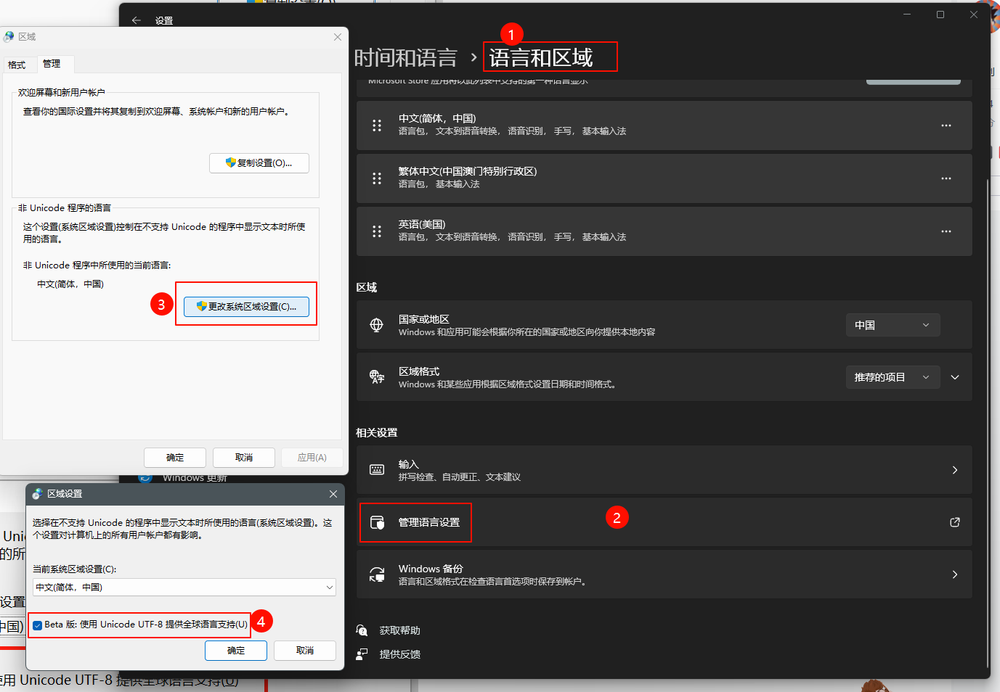

Frequently Asked Question (FAQs)
Is there a colab notebook
Yes, we have one. Please see
It shows you
How to install sherpa-onnx
How to download pre-trained text-to-speech (TTS) models
How to use sherpa-onnx with pre-trained models for TTS
How to enable UTF-8 on Windows
For Chinese Users: 如果英文模型正常，中文模型不正常。请看下面的解决方法 和这个 issue
Please see win11 下永久设置cmd编码为utf-8
How to install sherpa-onnx for TTS
For Python users
The fastest way to install sherpa-onnx for TTS is:
pip install sherpa-onnx
The above command does NOT require you to install a C++ compiler and it
supports a variety of platforms, such as:
Linux
x64
arm, e.g., 32-bit Raspberry Pi
arm64, e.g., 64-bit Raspberry Pi
Windows
x64, e.g., 64-bit Windows
x86, e.g., 32-bit Windows
macOS
x64
arm64, e.g., M1 and M2 chips
If you want to build the sherpa-onnx Python package from source, please refer to Install the Python Package.
After installation, please refer to https://github.com/k2-fsa/sherpa-onnx/blob/master/python-api-examples/offline-tts.py for example usage.
Hint
pip install sherpa-onnx also installs an executable sherpa-onnx-offline-tts.
The directory where it is installed should be already on your PATH after you
activate your Python virtual environment.
You can run
sherpa-onnx-offline-tts --help
in your terminal to get the help information about it.
Build from source
Please refer to Installation.
Where to get pre-trained TTS models
Please refer to Pre-trained models.
How to handle OOVs
Please add them to lexicon.txt.